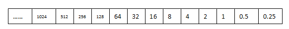
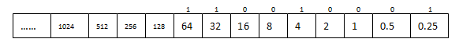
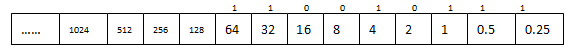
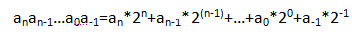
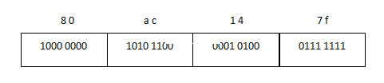
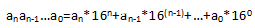
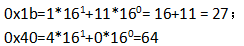

整数进制转换（十六进制、十进制、二进制）--表格法
在计算机里，最基本的存储单位为字节（Byte，常说的大B），1个字节包含8位（bit，常说的小b）。计算机的数据就是一个字节一个字节的形式存储在内存中。
内存的大小单位有KB，MB，GB，TB等，它们之间的关系是：
1KB = 1024B 1MB = 1024*1024B 1GB = 1024*1024*1024B 1TB = 1024*1024*1024*1024B
计算机存储单位一般用B，KB，MB，GB，TB，PB，EB，ZB，YB，BB来表示。
1KB (Kilobyte 千字节)=1024B 1MB (Megabyte 兆字节 简称“兆”)=1024KB 1GB (Gigabyte 吉字节 又称“千兆”)=1024MB 1TB (Trillionbyte 万亿字节 太字节)=1024GB，其中1024=2^10 ( 2 的10次方) 1PB（Petabyte 千万亿字节 拍字节）=1024TB 1EB（Exabyte 百亿亿字节 艾字节）=1024PB 1ZB (Zettabyte 十万亿亿字节 泽字节)= 1024 EB 1YB (Yottabyte 一亿亿亿字节 尧字节)= 1024 ZB 1BB (Brontobyte 一千亿亿亿字节)= 1024 YB
大家知道，整数包括负数，零，和正数。计算机中的整数分为有符号数和无符号数。有符号数的最高位表示符号：即最高位为0，表示正数，最高位为1，表示负数。无符号数表示非负数，整个位数都用来表示整数的值。比如，有下面2个有符号数： 10000110，由于最高位为1，所以是负数；00000110，由于最高位为0，所以为正数。然而，假设把上面2个数当作无符号数的话，那么就都是正数了。
计算机中的数，是以二进制存在于内存中的。关于数的表示，一般有二进制，十六进制，八进制，十进制这几种表示方法。
在C语言里，十六进制的表示方法是0x或者0X开头。而十六进制里的位数包括0，1，2，3，4，5，6，7，8，9，A(a)，B(b)，C(c)，D(d)，E(e)，F(f)。比如0x12abefac。
而八进制以0开始，它的位数包括0，1，2，3，4，5，6，7。比如012347。
二进制的数是由0和1组成的数，但在C语言里没有直接的二进制表示方法，即没有101101101 这种表示方法。
对于数的表示，需要经常把一个十进制的数与二进制数，十六进制数进行转换。 现在来看看如何将一个整数与二进制与十六进制的转换：表格法。
首先，在表格里写出在二进制里，每个位表示的整数的数值。比如，在上图里，第0位表示1，第1位表示2， 第2位表示4，第3位表示8，......，-1位为0.5，-2位为0.25，-3位为0.125，第N位表示的值为2^N。对于一个整数X， 首先在表格中找到比X小的最大数，比如如果X为100，那么在上面的表格里，比X小的最大数就是64， 所以，X在二进制中，此位为1；然后，用X减去该数，从右边表格里继续找比剩下小的最大数。一直到X最后变为0。
比如，以100.25为例子。 如下图：
先看整数部分：首先比100小的最大数是64，因此，该位记为1。100-64=36。比36小的最大数是32，因此，32所在的位为1。36-32=4。所以，比4小的最大数为4，所以4所在的位为1。4-4=0，因此转换结束。于是，100的二进制为“1100100”。
再看小数部分：0.25，比0.5要小，所以0.5位应该记为0，而0.25位恰好相等，所以0.25位记为1。 因此，100.25对应的二进制位：1100100.01
2进制转化为10进制，同样可以用表格法，分别将各个位对应的值相加，就可以得到对应的十进制。比如，对于二进制：1100101.11，其中各位对应的值为：
所以，1100101.11对应的10进制值为：64+32+4+1+0.5+0.25=101.75。 2进制转换为10进制公式为：
从右往左，把二进制分成4个位一组。左边不够4位，以0填充。然后将每4位转化为16进制的一个数。
比如： 1100100，从右往左按照4位为一组，进行组合结果为：0110 0100（左边补0）。其中0100对应的10进制为4，对应的16进制也是4。0110对应的10进制为6，对应的16进制也是6。所以，1100100对应的16进制为0x64。 为了方便转换，请记住下面的1,2,...a,b,c,d,e,f与二进制和10进制的对应关系：
4个bit表示的2进制：
16进制：10进制对应关系： 0000:0:0 0001:1:1 0010:2:2 0011:3:3 0100:4:4 0101:5:5 0110:6:6 0111:7:7 1000:8:8 1001:9:9 1010:a:10 1011:b:11 1100:c:12 1101:d:13 1110:e:14 1111:f:15
16进制转化为2进制，也很简单。就是把依次对每个十六进制数中的每一位转换为4位2进制对应的值， 然后按照顺序排列起来就是对应的二进制。比如：对于整数0x80ac147f
0x80ac147f=1000 0000 1010 1100 0001 0100 0111 1111
注意：转换的时候，一定要以字节为单位，在十六进制中，2位为一个字节！
将16进制转化为10进制的方法：
比如：
10进制可以直接转化为16进制，只需要依次除以16，然后得到的余值，就是16进制。但这种方法，还是不大方便。方便的方法 ， 是先把10进制数转化为2进制数，然后再把2进制数转化为16进制数。
比如，100对应的二进制我们很快就能求出来是：1100100，把这个2进制按照4位为一个单位进行转化，0110 0100-->64所以对应的16进制为：0x64。
思考题：
1 实现int atoi(char *str)，将字符串转化为整数：比如"100"-->100
提示：'9'-'0'-->9
2 实现char *itoa(int val,char buff)，将整数转化为字符串：比如100-->"100"
提示：9+'0'-->'9'
3 计算下面表达式的值
(char)(127<<1)+1
(char)(-1>>1)+1
1<<2+3
4 （阿里面试题）：八进制的256，转化成七进制数是多少？
5 （腾讯面试题）：15*4=112成立，则系统采用的进制是（）
A：6，B：7，C：8，D：9
6 （阿里面试题）：2^100 % 7=()
A:2,B:3,C:4,D:5
7 （腾讯面试题）：请设计一个函数，把十进制的正整数转化为4位定长的三十六进制字符串。三十六进制的规则为“0123456789ABCDEFGHIJKLMNOPQRSTUVWXYZ"。比如： 1=“0001”，10=“000A”，20=“000K”，35=“000Z”，36=“0010”=
本页共85段，3402个字符，6737 Byte(字节)